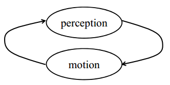

Percesption and Motion
{#fig:}
In general, environment perception increases the robot’s knowledge, while motion tends to induce a loss of knowledge due to the inherent noise in robot actuation and the stochasticity of robot environments.
State Prediction and Correction
Formulation
- Estimate the state of a system given observations and controls Robot-Mapping
Goal:
- Belief is the Robot's internal knowledge about the state of the environment.
- Posterio probability conditioned on all past controls and measurements
- Prediction of the current state, before incorporating the measurement at time t.
- Correction and measurement update process:
Devrivation of Recursive Bayes Filter
Techniques in Bayes Filter Devrivation:
- Bayes Rule
- Markov assumption
- Law of total probability Contineous case:
Discrete case:
Summary
Bayes filter can be written as a two step process
- Prediction step
Correction step
Motion model
sensor or observation model
References
Robot-Mapping. Robot Mapping, http://ais.informatik.uni-freiburg.de/teaching/ws13/mapping/ ↩